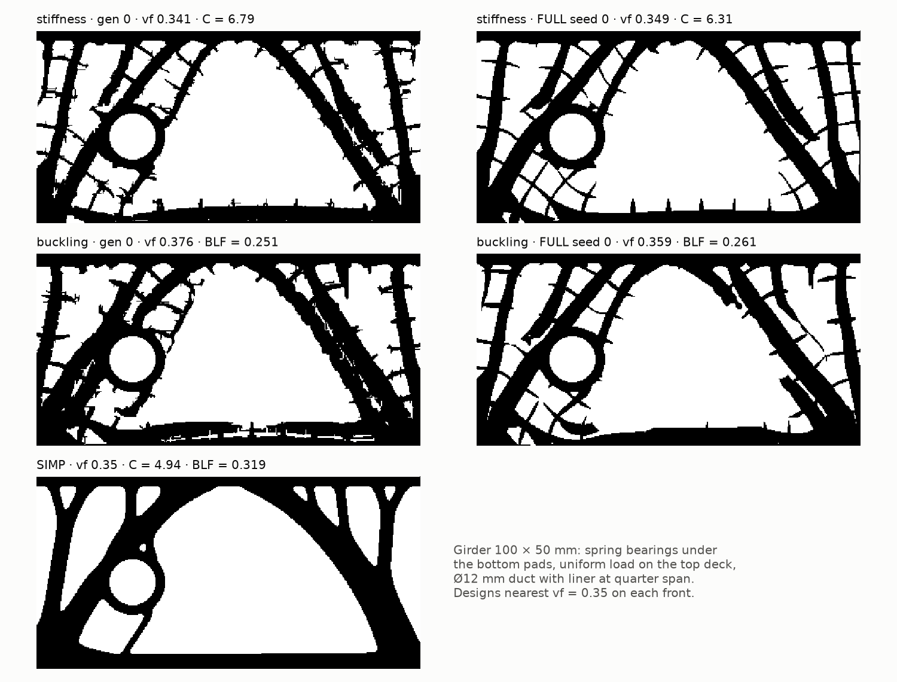
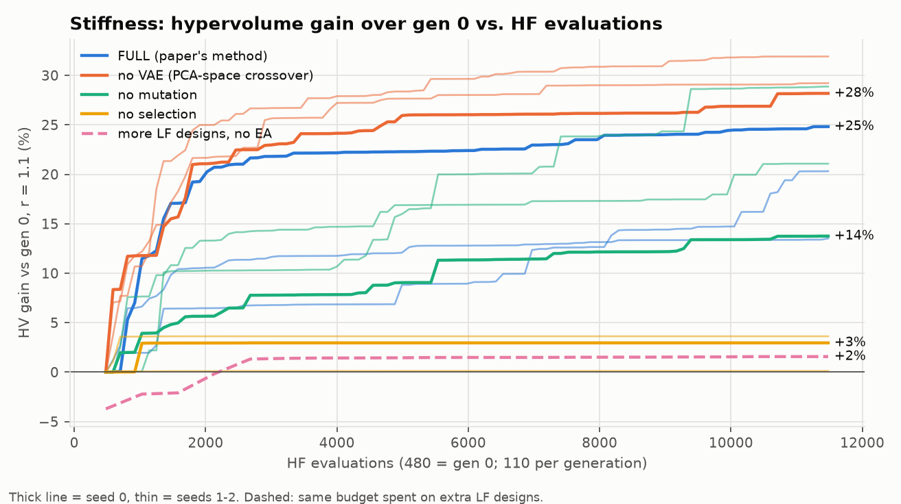
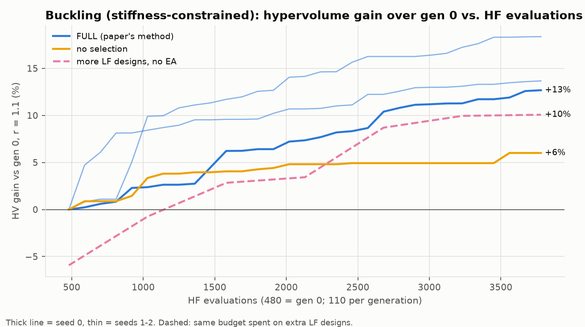
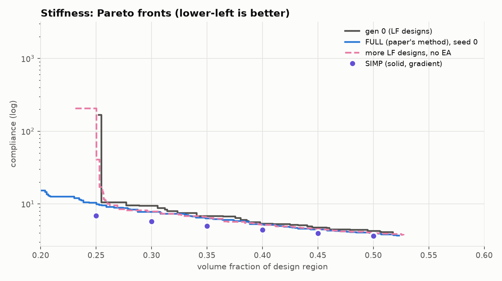
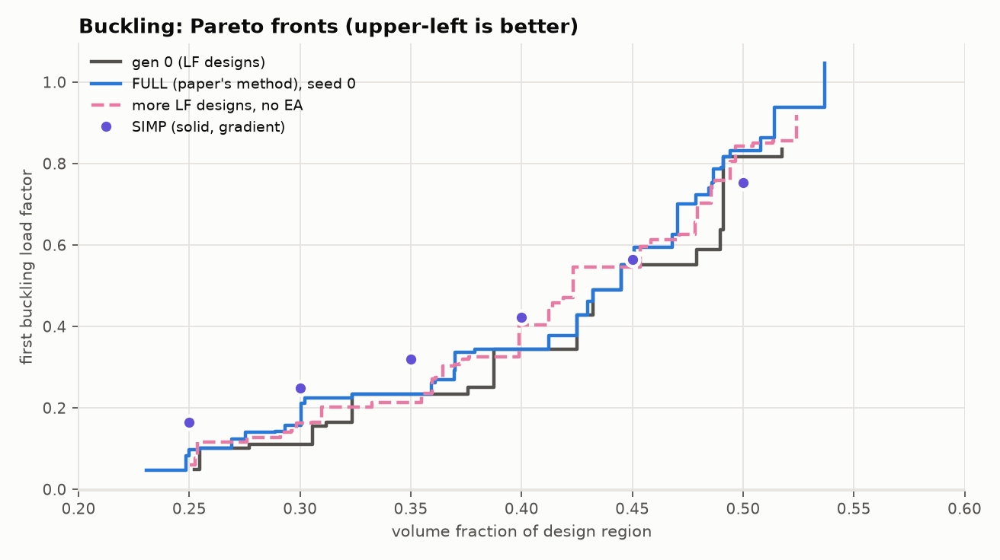
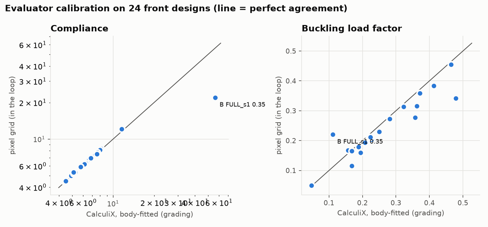

Reproduction of Xu, Guo, Kawabe & Yaji, Engineering Structures 371 (2027) 124076 (doi, arXiv 2510.08830), with a different geometry and supports, and with controls the paper did not run. Hypotheses and pass rules were frozen before any run.
What happened, in one paragraph. The paper's method designs lattice-filled structures in two steps: a cheap "averaged-material" optimiser proposes designs, a phasor pattern turns them into real lattice geometry, and an evolutionary search improves the result by scoring the real geometry. On our girder the evolutionary step does improve the trade-off between material and performance — by +19.5 % (stiffness) and +14.9 % (buckling), comparable to the paper's +15 % / +19 % — and it beats simply generating more averaged-material designs with the same budget. The gain comes from selection: the search keeps the designs whose lattice comes out connected and clean. Two of the paper's ingredients add nothing here: the mutation operator is inert, and the generative model (VAE) makes things worse than plain recombination because it collapses the population's diversity. The evolved lattice designs also lose to an ordinary solid topology optimisation (SIMP) on both buckling and stiffness.

| Question | Evidence | Verdict | |
|---|---|---|---|
| H1 | Does the paper's gain replicate? (hypervolume gain ≥ 10 %, every seed positive) | stiffness +24.8 %, +20.3 %, +13.5 %; buckling +12.7 %, +13.7 %, +18.4 % (30 generations) | PASS |
| H2a | Does the search beat spending the same budget on more low-fidelity designs? | more-LF: stiffness +1.6 %, buckling +10.1 % | EA > more LF |
| H2b | Does selection matter? (vs. same operators, no selection) | no selection: stiffness +3.0 %, +0.1 %, +3.6 %; buckling +6.0 % | PASS |
| H3 | Does mutation help? (≥ 2 points) | no mutation: +13.8 %, +28.9 %, +21.1 % (FULL − no-mutation = -1.7 points) | MISS |
| H4 | Does the VAE help? (≥ 2 points) | PCA-space crossover: +28.2 %, +31.9 %, +29.2 % (FULL − no-VAE = -10.2 points) | MISS |
| H5 | Do evolved buckling designs beat plain SIMP at equal volume? | 1 of 4 volumes; also 17–42 % less stiff (CalculiX agrees) | MISS |
| H6 | Do the gains survive re-drawing the random phasor phases? | stiffness keeps 86 %, buckling 68 % (post-hoc variant, see trust panel) | PASS |
| H7 | Does the in-loop pixel evaluator agree with body-fitted CalculiX? | ranking ρ = 0.99 / 0.90; spread of the ratio 13 % / 26 % (limits 10 / 20 %) | MISS |
Hypervolume measures how much of the material-vs-performance plane the best designs cover; higher is better. Each curve is the best set found so far against the number of expensive evaluations spent.




PREREGISTRATION.md was frozen before any evolutionary run. One dated addendum (budget) cut the
buckling arms from 60 to 30 generations before any buckling result was graded.
log.md): pixel grid instead of COMSOL in the loop; buckling stiffness from
stress averaged over 1 mm (otherwise pixel buckling loads fall with mesh refinement at sharp corners); spring bearings
(fixed supports give a corner mode whose load → 0 under refinement); an orientation encoding that respects the cell's
symmetries; a spline fit of the cell stiffness (the paper's polynomial cannot fit its jump at full width); 100 / 30 generations
instead of 300.Experiment folder: experiments/2026-11-16-evolutionary-dehomogenization/ — PREREGISTRATION.md, log.md, results/.